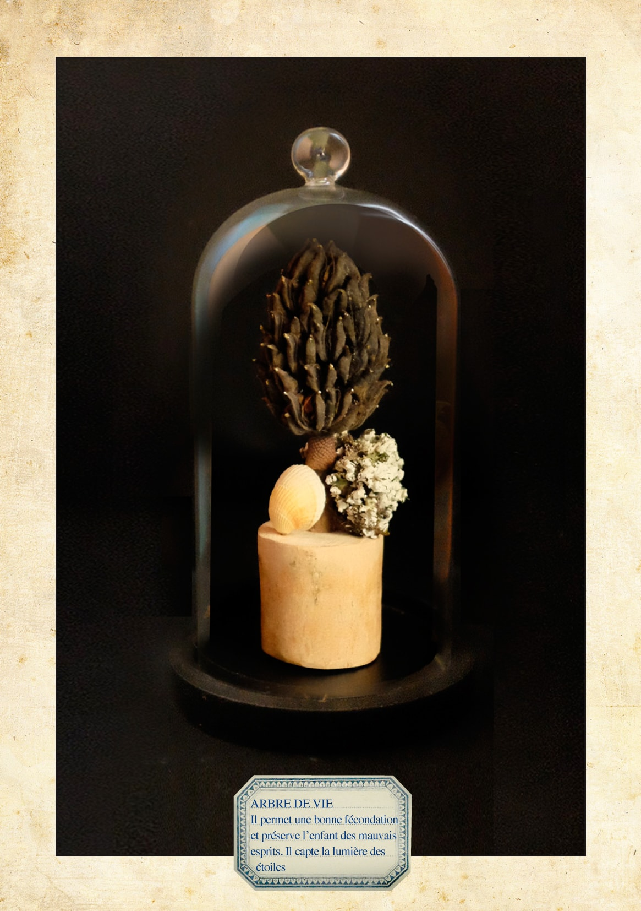
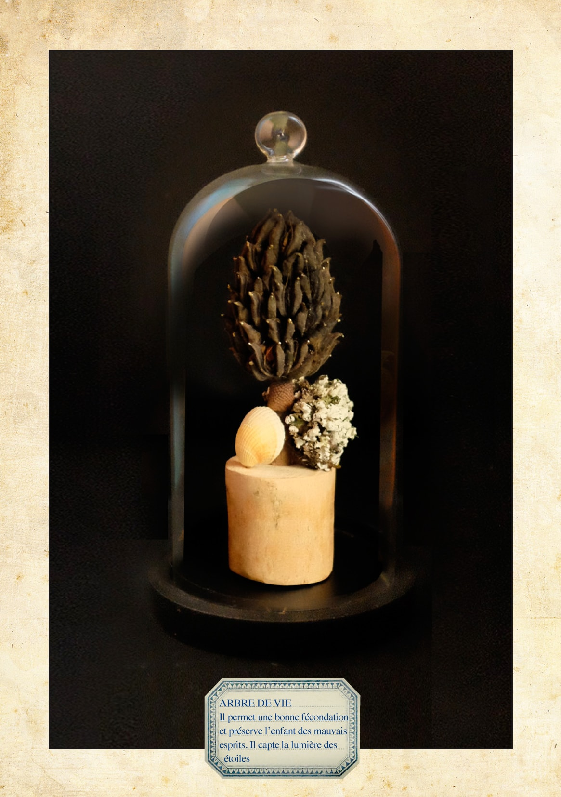

Légendes sauvages
 

Lors d’un séjour en Toscane du nord à Montelateronne,
Olivier Geffard découvre dans ce qu’il restait d’une école désertée
quelques notes et photographies représentant des peintures et masques d’une civilisation disparue ( le tout oublié dans une armoire).
Lire la suite
Ces archives furent rapportées par un professeur nommé Guido Coen âgé alors de 85 ans. Il lui raconta que , pendant son voyage de noces
en Amérique du sud, un Indien nommé Schabernack lui vendit,
sur un marché, ces quelques pièces qu’il rapporta en Europe.
Ce fut pour Olivier une révélation : retrouver les traces de cette peuplade : Hainum.
Pour chercher d’autres traces de ce peuple, il va parcourir près de 5000 km en bicyclette puis embarque sur le fleuve Nanakam pour naviguer vers son but. Loin de toute civilisation contemporaine. Le village était là, posé sur les rives du fleuve. Il passa des mois en leur compagnie, en utilisant son meilleur passeport : la peinture, le dessin , prendre des notes et se fondre dans ce peuple. Il rapporta quantité de talismans, , offrandes, sculptures et autres objets chamaniques, croyances et porte-bonheur.
Restée longtemps inconnue du public, cette collection est visible aujourd’hui auprès de quelques collectionneurs et passionnés.